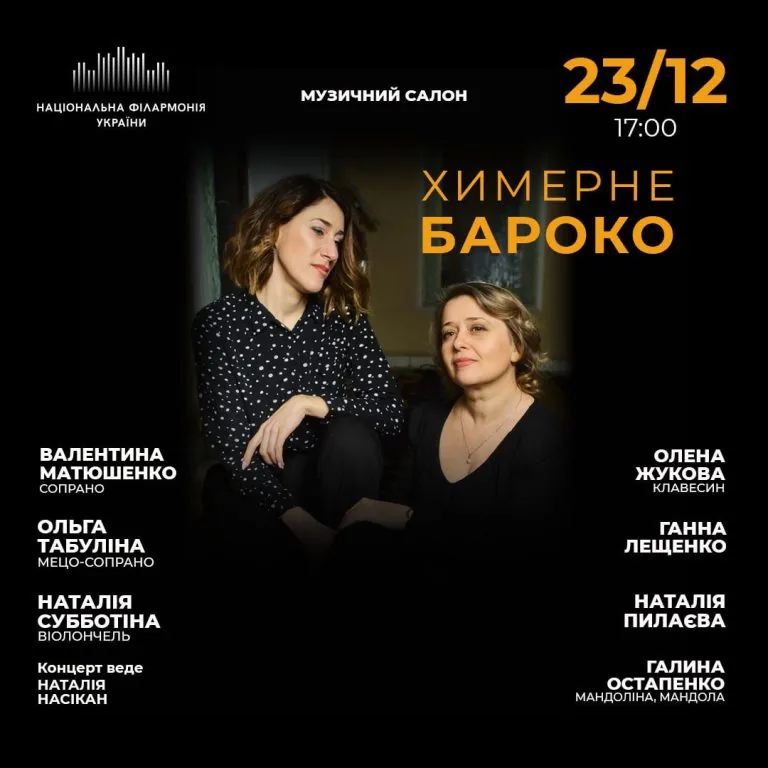

Період співпраці: 1 березня — 31 грудня 2024 року
Сфера діяльності: Організація концертів класичної музики, культурних заходів
/Завдання клієнта
Цілі проєкту:
- Залучити нову платоспроможну аудиторію на концерти
- Збільшити онлайн-продажі квитків
- Підвищити впізнаваність бренду серед молодої аудиторії
- Активізувати інтерес до філармонії у соціальних мережах
/Що ми зробили:
стратегія та реалізація:
Аналіз ситуації до старту:
- Відсутність системного підходу до реклами
- Оголошення без емоційного контенту (банери без динаміки, відсутність відео)
- Неактуальні меседжі для молодої аудиторії
- Слабка конверсія в продаж

/Стратегія та реалізація:
Аудит і позиціонування:
- Аналіз ЦА: виділено декілька сегментів — традиційна старша аудиторія;
- молода аудиторія 25–35, поціновувачі інструментальної музики, родини з дітьми;
- Конкурентний аналіз: опера, камерні оркестри, приватні концертні ініціативи;
- Розроблено контент для кожного сегмента (виконавці, формати, меседжі).
Запустили таргетовану рекламу:
- Налаштували сегментовані кампанії для різних груп аудиторії та тестували різні формати оголошень;
- Використовували lookalike-аудиторії та ремаркетинг;
- Збільшили кількість якісного візуалу для рекламних кампаній.
Стратегія воронки:
- Обрали різні цілі: трафік, конверсія, взаємодія. Також застосовували ремаркетинг;
- Налаштування сегментованих кампаній: нова аудиторія / тепла / Lookalike;
- Запуск подієвих та загальних кампаній з креативами під FB, Instagram, Reels.
Обсяг реалізованого:
- Проведено 127 рекламних кампаній;
- Промотовано 60+ концертів (сольні, оркестрові, камерні).
/Що спрацювало найкраще:
- Reels з живими кадрами дали найвищу залученість і CPC нижчий на 30%, ніж у статичних банерів;
- Таргетинг на виконавця або подію працює краще, ніж загальні афіші;
- Промо до свят та тематичних подій (наприклад, «Новорічний концерт») давало кращий CTR і вищу конверсію;
- Адаптація меседжів до регіону та віку підвищила релевантність контенту.
/Висновки:
- Системна реклама дозволила вийти за межі постійної аудиторії філармонії;
- Вперше значна частка квитків була продана через соціальні мережі;
- Впізнаваність серед молодої ЦА зросла (особливо 25–35 років у Facebook/Instagram).